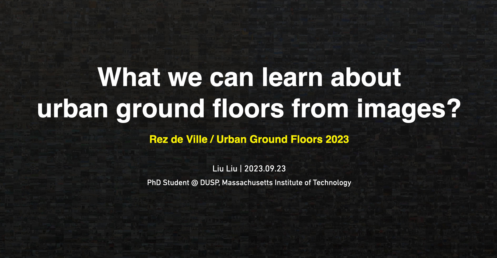
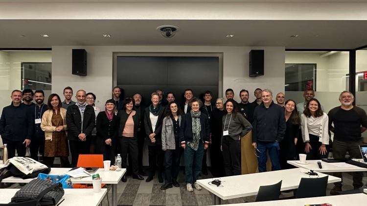
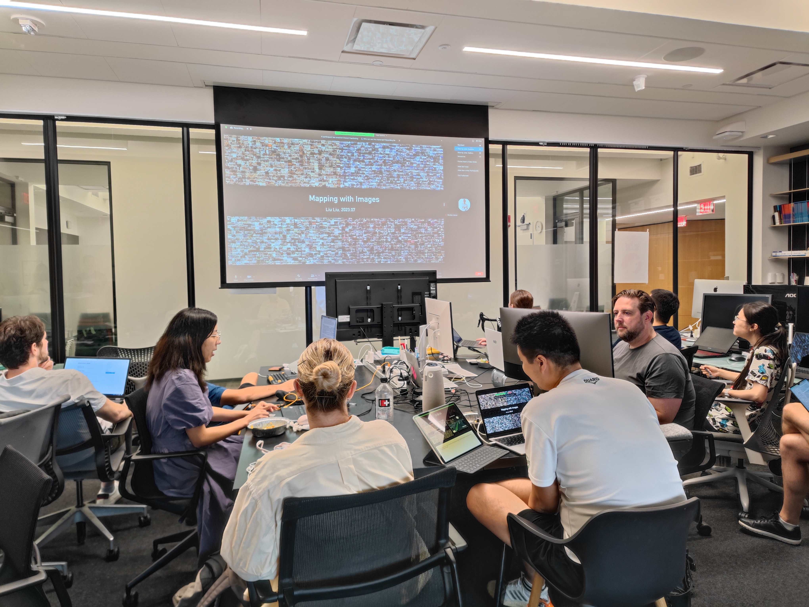
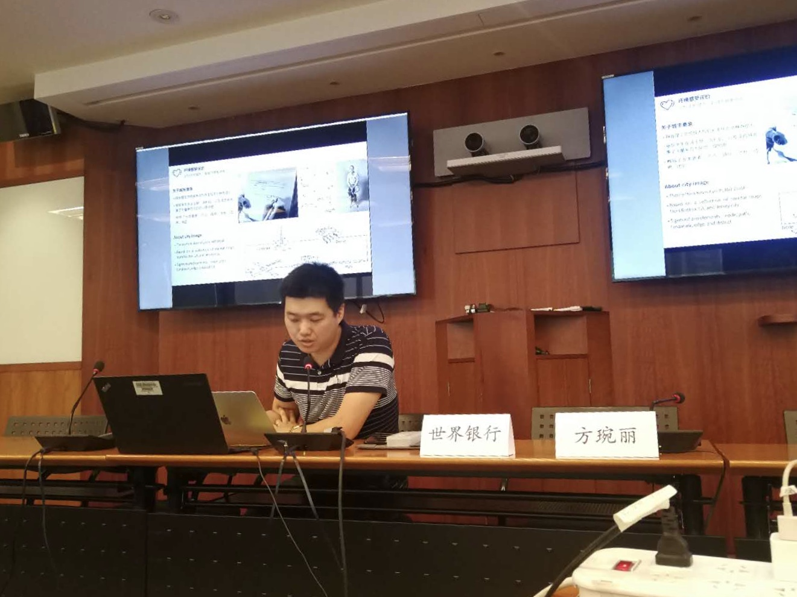
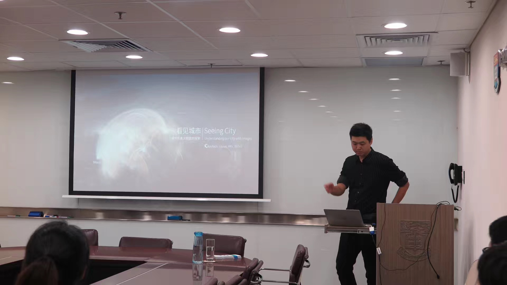

To obtain the slides view password, please contact me.
Rez de Ville / Urban Ground Floors 2023
Date: Sep 22-23, 2023
Location: School of Architecture and Planning, Massachusetts Institute of Technology
The 2023 Rez de Ville: In Transition seminar will delve into the evolving dynamics of urban ground floors amidst modern societal, economic, environmental, and technological shifts and explore the implications of these changes on diverse urban populations. Here is the talk list. A quick brief of the case can be found here.


PechaKucha @ Senseable City Lab 2023
Date: Jul 26, 2023
Location: School of Architecture and Planning, Massachusetts Institute of Technology
A brief of my previous research and work. Due to the time limit, mostly is about urban imagery analysis. It is the application for the research work at Senseable City Lab. The process was smooth and successful.


City Form Lab Lunch Talk @ MIT 2022
Date: Oct 12, 2022
Location: School of Architecture and Planning, Massachusetts Institute of Technology
A brief of my previous research and work. It’s a 45-min talk, the talk includes my previous data-driven research and practice. The audience are all City Form Lab members.

Seeing City Talk @ World Bank 2019
Date: May 14, 2019
Location: World Bank Beijing Office
It’s an 30 mins talk about recent projects from CitoryTech team. The talk covered a series of urban data research, practice in our exploration of understanding our city with images.


Seeing City Talk @ HKU 2019
Date: Mar 11, 2019
Location: Faculty of Architecture, Hong Kong University
It’s an 1-hour talk about recent projects from CitoryTech team. The talk covered a series of urban data research, practice in our exploration of understanding our city with images. I also introduced the development of crowd sourcing tools.

